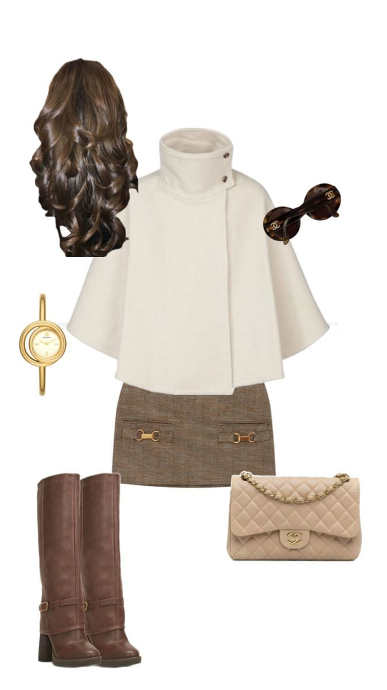

Soft Neutrals for Winter

Winter fashion doesn’t have to mean dull tones. This season, soft neutrals are making a comeback. Think warm beige, oat milk, and cream layered with cozy textures like cashmere and fleece.
A monochrome outfit with subtle contrast — like a beige coat over a cream turtleneck — gives sophistication without trying too hard. Add a gentle pop of color with blush accessories to stay in the spirit of Runway Bytes’ signature aesthetic 💕.
← Back to Home